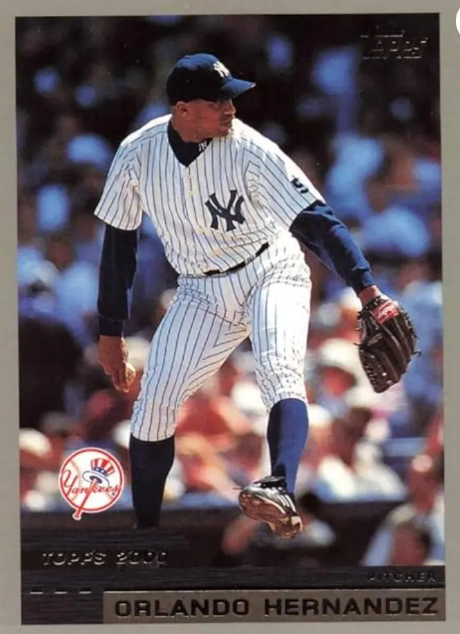

Orlando Hernández "El Duque"
Career Highlights & Facts
(Facts are AI-generated and may require verification)
- Features a signature high-leg kick delivery that disrupts timing.
- Defected from a Caribbean nation to pursue a professional career.
- Earned a reputation for performing under immense pressure during postseason play.
Would you like to find out more about Orlando Hernández?
Read Player Biography
Wikipedia Summary:
Orlando Hernández Pedroso, nicknamed "El Duque", is a Cuban-born right-handed former professional baseball pitcher. He pitched for the Industriales of the Cuban National Series, the New York Yankees, Chicago White Sox, Arizona Diamondbacks, and New York Mets of Major League Baseball, and the Cuban national baseball team in international play.
Career Totals
| WAR | W | L | ERA | G | GS | SV | IP | SO | WHIP |
|---|---|---|---|---|---|---|---|---|---|
| 23.1 | 90 | 65 | 4.13 | 219 | 211 | 2 | 1314.2 | 1086 | 1.263 |
Statistics via Baseball-Reference.com
The Original Clue